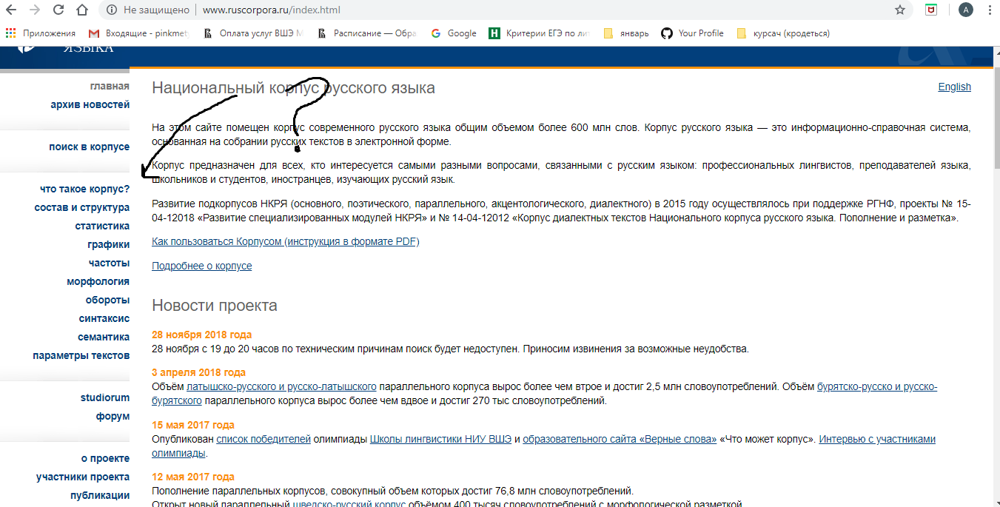
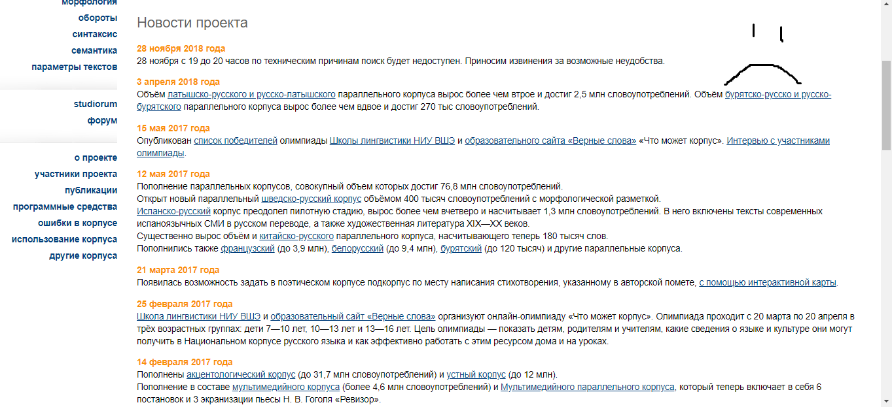
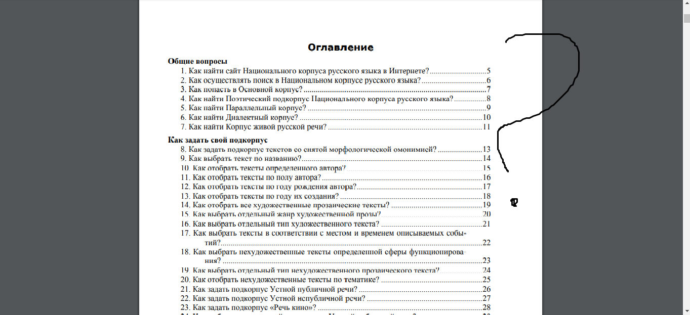

На этот вопрос, казалось бы, ответить довольно просто - всем нужны современные технологии независимо от специальности. Но если говорить исключительно о филологах, то на цифровой грамотности завязан часть наших исследований под названием Digital Humanities. Помимо этого, современные технологии обеспечивают лёгкость добычи информации (я говорю сейчас не сколько об Интернете, сколько о том, что правильное применение навыков работы позволяют сократить затрачиваемое время в разы), что, абсолютно точно, важно для человека, специализирующегося на гуманитарной направленности.
Крайне сложно найти что-либо, особенно если пользуешься Корпусом в первый раз. Кажется, его разработкой занимались создатели Хогвартса (или, как минимум, архитекторы здания на Старой Басманной)
Я осознаю, что многие сайты делают именно так, но в случае с Корпусом жизнь становится адом, так как помимо того, что ты не можешь разобраться во всех подотделах, тебе ещё вечно лезут эти новости
Серьёзно, та инструкция, что дана в ПДФ файле на главной стране, заставила меня думать, что я прочитала ещё раз "Тихий Дон", только на этот раз его написали академическим языком. Ничего не понятно и запутанно - да ещё и огромная какая-то.
